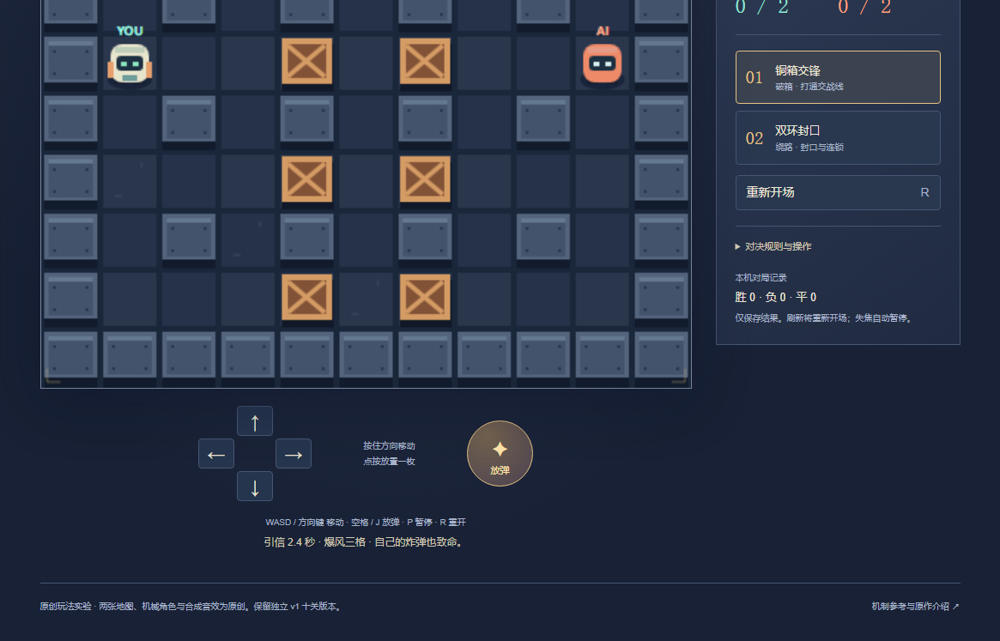
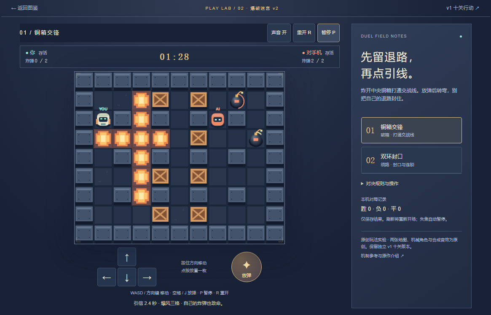
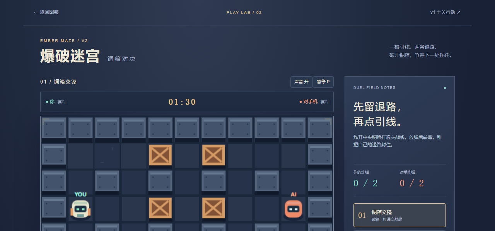
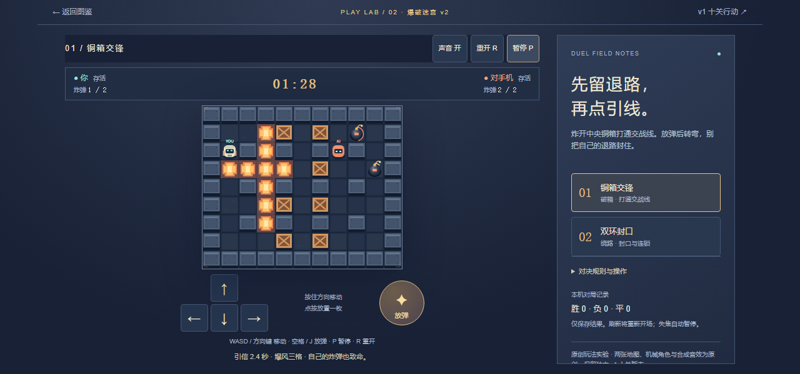
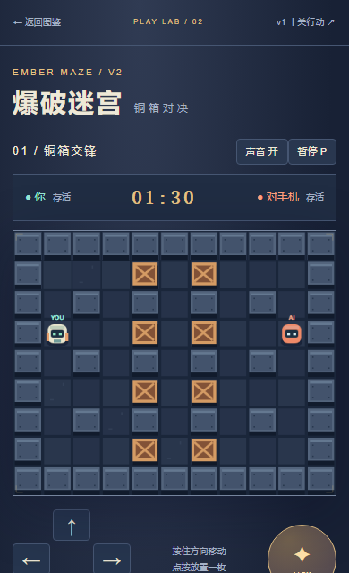
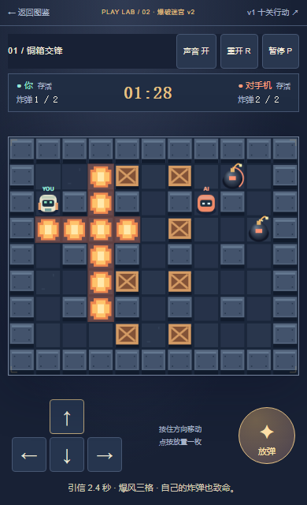
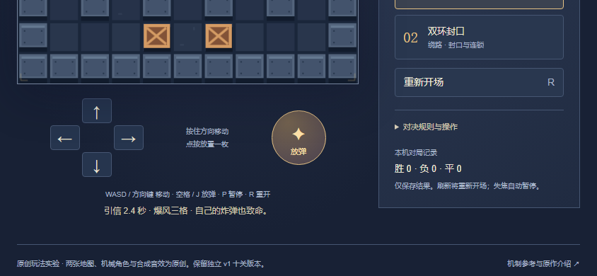
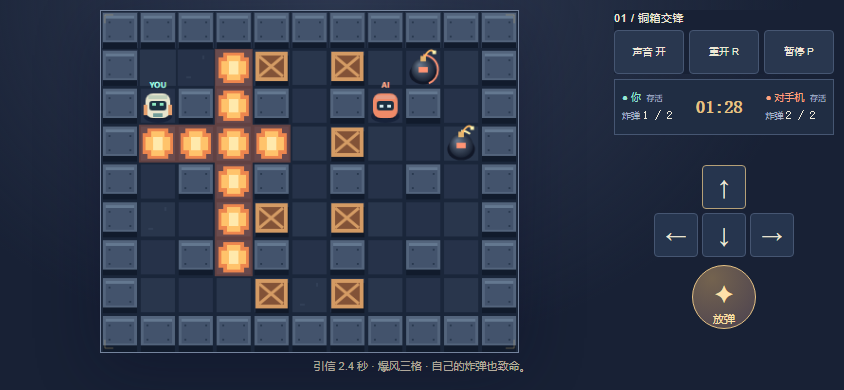
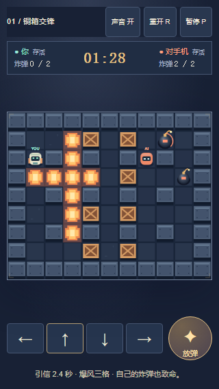
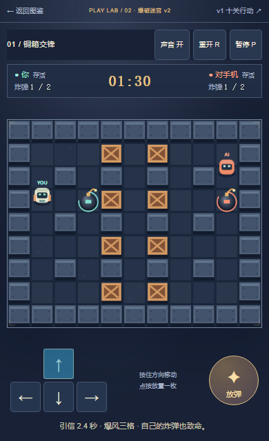

基线99af2f7。只修布局与必要焦点，未提交、推送、部署或创建PR。以下是原尺寸实际浏览器截图，不是生成画面或引擎离屏图。操作由自动化完成，不是真人/实体手机/完整通关验收；前后对照是独立短时场景，不声称逐帧相同战局。点击图片看原图。
3运行文件补丁 · 含测试与说明的完整源码补丁 · 验证说明 · 保留核对与本地状态 · 7视口操作报告 · 16项Node检查










最终控制台与资源错误为空。首轮旧版入口因稀疏检出漏掉原CSS依赖出现404，补齐同一提交原文件后复验通过；失败记录保留在 首轮记录。未改AI、引信、两图、素材或旧十关。